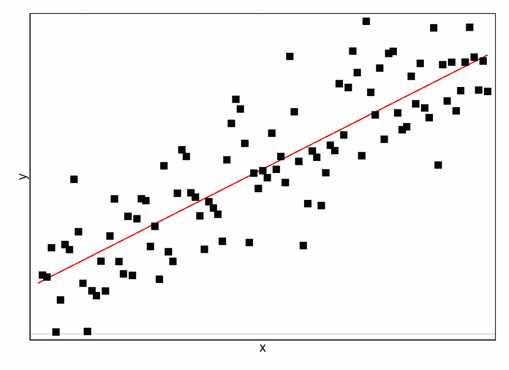
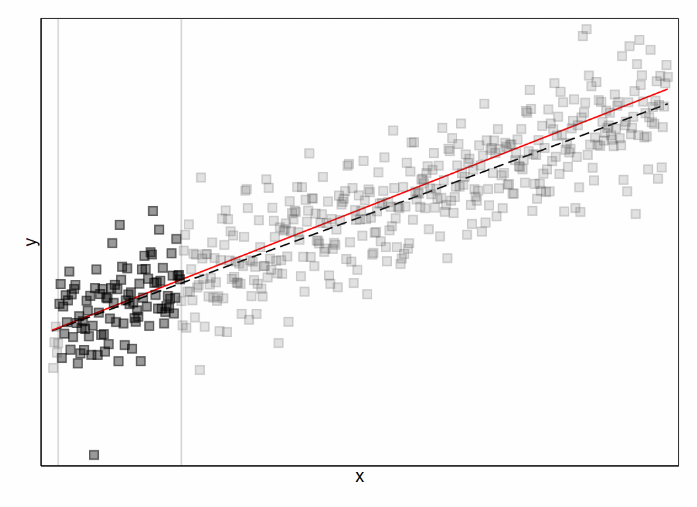

Previous: Chapter 18 - Evaluating Effect Sizes
# Run this first so it's ready by the time you need it
install.packages("dplyr")
install.packages("ggformula")
library(dplyr)
library(ggformula)
Chapter 19 - Sources of Model Bias#
20.1 Error vs. bias#
We use statistics to try and explain complex things in the world, and arrive at some general conclusions about what we can expect. More specifically in the context of the general linear model, we try to model the data generation process of data we care about and see what information helps us make the best predictions about those data.
We know from our discussion of model error that it is hard and maybe impossible to make perfectly correct predictions. In any data generation process, we might be able to figure out that using information from some predictor variables helps us explain some variation in an outcome variable and make better predictions, but there is almost always some error left unexplained.

For any particular prediction we make about the outcome value of one data point, that prediction is likely to be off by a bit. This amount that we typically miss by is the error of a model. We can quantify it by looking at the distribution of the residuals a model produces when making predictions. For example, let’s simulate a sample of data with a partially-known data generation process, and make predictions using the part of the model that we know:
x <- rnorm(100,0,1) #defining a random variable
e <- rnorm(100,0,1) #some unexplained error
y <- 2 + 0.5*x + e #what the true data generation process is
sim_df <- data.frame(x,y)
predicted_y <- 2 + 0.5*x #expected y when we don't know e
If we plot the residuals of the model in this sample, making a histogram of the error distribution, we see that most of them are non-zero. We are missing our predictions by a bit.
sim_df$model_resid <- sim_df$y - predicted_y
gf_histogram(~ model_resid, data = sim_df)%>% gf_vline(., xintercept = 0)
The spread of the error distribution tells us by how much we typically miss our predictions. A wide error distribution means a model has a lot of error. The narrower we can make the error distribution, and the less error there is, the better our model.
However, model error isn’t the only thing for us to be aware of when relying on the predictions a model makes. Let’s imagine a situation where the true data generation process only has a very small amount of unaccountable variation, so that we are able to explain almost all the error. We can still make very inaccurate predictions if we use the wrong coefficients in a model:
x <- rnorm(100,0,1) #defining a random variable
e <- rnorm(100,0,0.1) #tiny unexplained error
y <- 2 + 0.5*x + e #what the true data generation process is, almost no error
sim_df <- data.frame(x,y)
biased_y <- 5 + 0.5*x #using the wrong intercept value to make predictions for y
sim_df$model_resid_biased <- sim_df$y - biased_y
gf_histogram(~ model_resid_biased, data = sim_df) %>% gf_vline(., xintercept = 0)
Take a look at the center of both these error distributions.
In the first error distribution we made, few residual values were exactly equal to 0 (few predictions were perfect), but across all the residuals they clustered around 0. That means even if any one prediction is unlikely to be perfect, the predictions as a whole aren’t missing in any systematic way.
In contrast, the spread of the second error distribution is narrow, but way off 0. This means that every prediction we are making is wrong, and they’re all wrong in the same way.
This is known as bias. A model has error if its predictions are sometimes wrong. A model has bias if the predictions are wrong in a systematic way.
Way back in chapter 3 we used a bulls-eye metaphor to talk about measurement error vs. validity. We can use the same metaphor here. If the bulls-eye is the actual value of a datapoint on an outcome variable and each dot is a prediction, model error refers to the spread of those predictions while model bias refers to where those predictions are centered on.

20.2 Unbiased vs. biased estimates#
What will make a model biased? Take a look at the model coefficients that were used to make predictions for both error distributions above. In the unbiased model, we used the values “2” and “0.5” as coefficients for the intercept and x, respectively, in order to make predictions about y. These are the exact same values we used in the true data generation process for y, so we know the only reason our predictions were off is because we didn’t know the value of e to include in the prediction equation.
In the biased model, we used “5” instead of “2” for the coefficient of the intercept. This made our predictions systematically overshoot the actual values of y.
Thus you can think of bias in terms of the value of the coefficient estimate in a model. If it is the same value as the population parameter is, a model is unbiased (even though it might have error). If the model coefficient is different than the population parameter, the model is biased.
We know from our discussion of sampling distributions that any one estimate derived from a data sample is unlikely to exactly match the population parameter. For example, let’s simulate an entire population of data with the same data generation process above, and fit a model in just a sample of it:
x <- rnorm(10000,0,1) #defining a random variable
e <- rnorm(10000,0,1) #some unexplained error
y <- 2 + 0.5*x + e #what the true data generation process is
sim_df <- data.frame(x,y)
set.seed(10)
sim_sample <- sample_n(sim_df, size=100, replace=TRUE)
sim_model <- lm(y ~ x, data = sim_sample)
sim_model
Whereas the true intercept and effect of x are 2 and 0.5 respectively, our estimates for those coefficients are 1.84 and 0.57. If we were to use these values to make predictions within the data sample we used for fitting the model:
sim_sample$model_resid <- sim_sample$y - predict(sim_model, sim_sample)
mean(sim_sample$model_resid)
The residuals are centered on 0 (or some value so tiny it’s basically 0).
But remember we don’t ultimately care about making predictions about known data, but about unknown data in the population more generally. How would this exact model do in the rest of the population?
sim_df$model_resid <- sim_df$y - predict(sim_model, sim_df)
mean(sim_df$model_resid)
This error distribution has a non-zero center, which means the model is making biased predictions. It is slightly underestimating the true value of y in the population.
Technically any one model is going to make somewhat biased predictions. This is because of the sampling error that results in different coefficient estimates.
However, we also know from our discussion of sampling distributions that bigger sample sizes reduce the standard error of a sampling distribution. This means that model estimates are on average closer to the true population parameter in large samples, and would thus make less biased predictions:
set.seed(10)
sim_sample <- sample_n(sim_df, size=5000, replace=TRUE) #picking a larger sample
sim_model <- lm(y ~ x, data = sim_sample)
sim_df$model_resid <- sim_df$y - predict(sim_model, sim_df)
mean(sim_df$model_resid)
In this way, fitting models in larger samples improves the accuracy of predictions from any one model.
But the prediction accuracy of one model is not actually the biggest concern we have about model bias. This is because, even though one sample estimate is unlikely to match the population parameter, estimates created from many samples will cluster around the true population parameter. This means that, while any one model may be biased, there’s no systematic direction in that bias. Due to this, a model coefficient is actually known as an unbiased estimator.
We call this an unbiased estimator even though any one coefficient estimate is likely to make biased predictions. We call it this because the amount of bias is only determined by sampling error. If we drew many samples and created many estimates, the distribution of those estimates would center on the true population parameter:
x <- rnorm(10000,0,1) #defining a random variable
e <- rnorm(10000,0,1) #some unexplained error
y <- 2 + 0.5*x + e #0.5 is the true b1 value
sim_df <- data.frame(x,y)
#sampling many estimates of b1
b1s <- vector(length=1000)
for (i in 1:1000) {
sim_sample <- sample_n(sim_df, size=100, replace=TRUE)
sim_model <- lm(y ~ x, data = sim_sample)
b1s[i] <- sim_model$coefficients[[2]]
}
#central tendency of b1 estimates
mean(b1s)
A worse situation is when a model estimate is biased in a particular way, repeatedly. Thus, no matter the samples you draw, the central tendency of those estimates will not be the same as the population parameter. When this occurs, you have a biased estimator.
An example of a biased estimator is the standard deviation of a distribution - specifically, if we define variance to be the mean of the squared residuals,
To see this, suppose we have a sample that contains just two IQ observations, 98 and 100. This is a perfectly legitimate sample, even if it does have a sample size of N=2. It has a sample mean of 99, and the sample is just large enough for us to be able to observe some variability (two observations is the bare minimum number needed for any variability to be observed). For this sample, the average amount of deviation from the mean is 1.
What intuitions do we have about the population based on this sample? As far as the population mean goes, the best guess we can possibly make is the sample mean: if forced to guess, we’d probably guess that the population mean IQ is 99. What about the standard deviation? Is it also the standard deviation of the sample? Or maybe, since the sample standard deviation is only based on two observations, you may feel that we haven’t given the population “enough of a chance” to reveal its true variability to us. It’s not just that we suspect that the estimate is wrong: after all, with only two observations we expect it to be wrong to some degree. The worry is that the error is systematic, such that every sample of 2 observations would be wrong in the same direction.
We can use R to simulate the results of many samples to demonstrate this. Given the true population mean of IQ is 100 and the standard deviation is 15, we can use the rnorm() function to generate the results of an experiment in which we measure N=2 IQ scores, and calculate the sample standard deviation. If we do this over and over again, and plot a histogram of these sample standard deviations, we get the sampling distribution of the standard deviation (see figure below).
Even though the true population standard deviation is 15, the average of the sample standard deviations is only 8.5.
Now let’s extend the simulation. Instead of restricting ourselves to a sample size of N=2, let’s repeat the exercise again for sample sizes from 1 to 10. If we plot the average sample mean and average sample standard deviation as a function of sample size, you get the results shown in this next figure.
On the left hand side (panel A) is the average sample mean for each sample size, and on the right hand side (panel B) is the average standard deviation for each sample size. The two plots are quite different: no matter the sample size, the average sample mean from a sample distribution of the mean is equal to the population mean. It is an unbiased estimator. The plot on the right shows that the average sample standard deviation from a sample distribution of the standard deviation is smaller than the population standard deviation σ. As sample size gets larger the estimate is smaller by less, but no matter the sample the estimate is always smaller than the population parameter. It is a biased estimator.
For standard deviation we can fix this bias, by dividing the sum of the squared errors by the degrees of freedom instead of just N:
This is why we use N-1 in the equation for standard deviation instead of N. It gives us a better estimate of the population standard deviation.
Biased estimates: when all statistic estimates are systematically different than the population parameter, no matter the sample they were fit in.
Biased estimators are particularly dangerous for statistical inference because, if you didn’t know the true population parameter, you would have no idea that all the estimates you could draw from any sample would be biased. You could find a large effect size, replicate the experiment in a large expensive data sample, get a really precise estimate of that effect where you’re feeling very confident, and you might still have no idea that that estimate is biased and centered away from the true population parameter. So it is important to be aware of what situations lead to biased estimates, and what to do to fix those situations.
20.3 Checking bias in models#
When it comes to coefficient estimates from models, the general linear model framework typically produces unbiased estimates.
However, there are certain situations where this is not the case. This is because the general linear model makes particular assumptions about the data used to fit a model. It will only produce unbiased estimates if those assumptions are met. If the assumptions are violated, your estimates might be biased. For this reason it’s a good idea to check whether your data meets these assumptions, and take certain actions to fix things if the assumptions are violated.
Unfortunately this process isn’t always done (or at least reported) in published research. Most publications tell you how certain they are about their model estimates (significance testing & confidence intervals), and many also publish how large their model estimate is (effect sizes). But both of these conclusions could be wrong if a model is biased. That’s why it’s important to check for bias too.
In the general linear model, there are 7 assumptions to look out for. We’ve actually already discussed most of them in different contexts, but now we will bring them together to see how exactly they determine model bias and what we can do about violations of these assumptions. In the sections below we will explain what these assumptions are, how to check for them, and what to do if they are violated. Each will be accompanied by a set of simulations so that you can see the sampling distribution of model estimates when the assumption is met and when it is violated.
20.4 Assumption 1: representative sample#
When you have a representative sample, the estimates you make in that sample have the best chance of resembling the true population parameter. The general linear model assumes that the relationship between variables within a sample is representative of the relationship between those variables in the population. If we get a sample where that relationship is substantially different, obviously we will get a coefficient estimate that is substantially different than the population parameter.
That can happen just by bad luck during random sampling: we just happen to draw a particularly strange sample by chance. But over many samples, random sampling will insure that on the whole our samples are representative and our estimates unbiased.
If there’s any reason our sampling process is not representative, those estimates might be biased even across many samples. For example, there is a famous saying that “money does not buy happiness”. If you were to test this statistically, you might look for a significant relationship between people’s happiness levels and how much money they make. But if you were to conduct this research only with college students (who come from a higher income bracket on average than the world population), you would only be investigating the relationship between money and happiness in people with more money, not across all income brackets. No matter what sample you drew, if it was not representative of the wider population, you might get a biased estimate (and you might miss the fact that money is indeed correlated with happiness at lower income levels where financial security is threatened). If your estimate is biased due to nonrepresentative sampling, it might apply to this specific population, but not generalize to other populations of people.
One way a sample can be unrepresentative is if you don’t have values from the full range of reasonable values on your outcome. We can see the impact of this with a simulation. First, we will simulate a medium relationship between two variables x and y and see what sort of sampling distribution we would get across many samples of those variables:
x <- runif(10000,0,1) #defining a random variable
e <- rnorm(10000,0,1) #some unexplained error
y <- 2 + 0.3*x + e #0.3 is the true b1 value in population
sim_df <- data.frame(x, y)
#sampling many estimates of b1
nobias_b1s <- vector(length=1000)
for (i in 1:1000) {
sim_sample <- sample_n(sim_df, size=100, replace=TRUE)
sim_model <- lm(y ~ x, data = sim_sample) #fitting a linear model instead of nonlinear
nobias_b1s[i] <- sim_model$coefficients[[2]]
}
#central tendency of b1 estimates
nobias_b1s_df <- data.frame(nobias_b1s)
gf_histogram(~ nobias_b1s, data = nobias_b1s_df, fill="red", alpha=0.5) %>%
gf_vline(., xintercept = 0.3) #true b1 is 0.3
mean(nobias_b1s)
Any one sample may find a b1 estimate that is larger or smaller than 0.3, but in general they will cluster around 0.3.
However, let’s say we only sample people who are high on the outcome variable score. The full range of that variable is about -2 to 6, but we’ll only select datapoints that had y values of at least 4. We’ll make the sampling distribution for this situation as well, and plot it (in blue) on the same graph as the no bias sampling distribution (in red) so that you can compare. A vertical black line marks where the true population parameter is.
x <- runif(40000,0,1) #oversimulating since we're going to cut out ~3/4 of the data
e <- rnorm(40000,0,1)
y <- 2 + 0.3*x + e #0.3 is the true b1 value in population
sim_df <- data.frame(x, y)
high_sim_df <- filter(sim_df, y>4) #filtering to only large y values
#sampling many estimates of b1
bias_b1s <- vector(length=1000)
for (i in 1:1000) {
sim_sample <- sample_n(high_sim_df, size=100, replace=TRUE)
sim_model <- lm(y ~ x, data = sim_sample) #fitting a linear model instead of nonlinear
bias_b1s[i] <- sim_model$coefficients[[2]]
}
#central tendency of b1 estimates
bias_b1s_df <- data.frame(bias_b1s)
gf_histogram(~ nobias_b1s, data = nobias_b1s_df, fill="red", alpha=0.5) %>%
gf_histogram(~ bias_b1s, data = bias_b1s_df, fill="blue", alpha=0.5) %>%
gf_vline(., xintercept = 0.3) #true b1 is 0.3
mean(bias_b1s)
The true relationship between x and y is 0.3, but by truncating the y variable, our sampling distribution is biased downward.
When your data is missing the full range of the outcome variable, there’s less variation present that would be explained by the predictor. Noise now has a bigger proportional presence, and the predictor can’t reliably explain noise.
Interestingly, the same is not true for truncating the x variable:
x <- runif(40000,0,1) #oversimulating since we're going to cut out ~3/4 of the data
e <- rnorm(40000,0,1)
y <- 2 + 0.3*x + e #0.3 is the true b1 value in population
sim_df <- data.frame(x, y)
high_sim_df <- filter(sim_df, x>0.75) #filtering to only large x values
#sampling many estimates of b1
bias_b1s <- vector(length=1000)
for (i in 1:1000) {
sim_sample <- sample_n(high_sim_df, size=100, replace=TRUE)
sim_model <- lm(y ~ x, data = sim_sample)
bias_b1s[i] <- sim_model$coefficients[[2]]
}
#red = unbiased sampling distribution
#blue = biased sampling distribution
bias_b1s_df <- data.frame(bias_b1s)
gf_histogram(~ nobias_b1s, data = nobias_b1s_df, fill="red", alpha=0.5) %>%
gf_histogram(~ bias_b1s, data = bias_b1s_df, fill="blue", alpha=0.5) %>%
gf_vline(., xintercept = 0.3) #true b1 is 0.3
mean(bias_b1s)
On average, the sampling distribution will still cluster around an effect of 0.3 for x. The difference here is that the sampling distribution is wider, despite having the same sample size. It isn’t the model coefficient that is biased in this case, but the standard error is biased to be too big. On average we will detect the right effect, but it will be harder to get an accurate picture of it. If the true effect is 0.3 but standard error is biased upward, we will have less power than we planned to find that effect significant - there will be more Type II errors.
This is only true however if the true relationship in the population is linear. If the slope of the regression line should change along different values of x, but you only sampled some of those values, you will miss the true contour of the regression line. This is the problem that happened in the money and happiness example discussed above.
Another instance of bias due to representativeness is when two predictor variables interact, such that predictor 2 influences the relationship between predictor 1 and the outcome, but we only collected data from some values of predictor 2. For example, if there’s a difference in how people give to charity between individualistic and collectivistic cultures, but you only sampled people born in the US.
Now, a nonrepresentative sample doesn’t ensure that your estimates will be biased. Estimates will only be biased if your sample is non-representative on variables that are involved in the data generation process you are investigating. If you are investigating the relationship between money and happiness but only have a sample of right-handed people, there’s a pretty good argument to make that being right or left handed doesn’t influence how happy money makes you. So the assumption of representativeness only applies to variables that are involved in the particular data generation process you are investigating.
How to check for assumption#
There aren’t great ways to check if your samples are representative. You need to know about the expected range of the variables in your model, and if there are any moderator variables out there that you haven’t included. If you aren’t familiar with your research domain enough to know these answers, it will be difficult to catch when your sample isn’t representative. You can try to include representativeness on major demographic variables like sex, race, etc. as a default to catch common reasons for nonrepresentativeness, but that doesn’t ensure you’re not missing something else important. Also, just because a study was run on only US college students, that doesn’t mean for sure that the sample is not representative. There has to be a good reason to expect truncated age and culture to make a difference on the estimated effect. The best you can do here is read about other research in your field to stay abreast of what others have found, and continue developing psychological research.
What to do if assumption is violated#
The time to deal with this assumption is before you collect data. Plan ahead to figure out what variables are important to be representative on, and do your best to recruit participants that have a variety of values on those variables. If for whatever reason you’re unable to do that, make sure you interpret your results within the subset of the population you were able to recruit, and not overgeneralize to people who are not represented in your sample. In other words, as we saw at the end of chapter 12 when talking about the limits of regression, we should’t extrapolate conclusions beyond the range of the data in our sample.
20.5 Assumption 2: linear relationship between variables#
The second assumption that needs to be met in order for the general linear model framework to produce unbiased estimates is that all the variables in the model are related to each other linearly.
We already discussed the idea of linear vs. nonlinear models at length in chapter 14, but it’s worth repeating here what happens if this assumption is violated and you misspecify a nonlinear model as a linear one. For variables to be related to each other linearly, that means they are combined only with addition - the raw values of each predictor variable are entered into the equation, and the parts of the model corresponding to each predictor variable are added together. If the true data generation process is nonlinear - involves a transformation of a predictor variable, or multiplying predictor variables with each other - you have to do that transformation to the data values before fitting the model.
Below is an example of what happens if we try to make predictions with a linear model, but the true data generation process was nonlinear.
x <- runif(10000,0,4) #defining a random variable
e <- rnorm(10000,0,1) #some unexplained error
x_squared <- x**2
y <- 2 + 0.5*x_squared + e #0.5 is the true b1 value in a quadratic model
sim_df <- data.frame(x, x_squared, y)
#sampling many estimates of unbiased b1
nobias_b1s <- vector(length=1000)
for (i in 1:1000) {
sim_sample <- sample_n(sim_df, size=100, replace=TRUE)
sim_model <- lm(y ~ x_squared, data = sim_sample)
nobias_b1s[i] <- sim_model$coefficients[[2]]
}
#sampling many estimates of biased b1
bias_b1s <- vector(length=1000)
for (i in 1:1000) {
sim_sample <- sample_n(sim_df, size=100, replace=TRUE)
sim_model <- lm(y ~ x, data = sim_sample) #fitting a linear model instead of nonlinear
bias_b1s[i] <- sim_model$coefficients[[2]]
}
#red = unbiased sampling distribution
#blue = biased sampling distribution
nobias_b1s_df <- data.frame(nobias_b1s)
bias_b1s_df <- data.frame(bias_b1s)
gf_histogram(~ nobias_b1s, data = nobias_b1s_df, fill="red", alpha=0.5) %>%
gf_histogram(~ bias_b1s, data = bias_b1s_df, fill="blue", alpha=0.5) %>%
gf_vline(., xintercept = 0.5) #true b1 is 0.5
mean(bias_b1s)
We set the true β1 in the data generation process to be 0.5, but the sampling distribution of b1 estimates centers on ~2. By misspecifying the model, we are overestimating the population β1 and guessing that the effect of x is larger than it actually is.
It’s also possible to underestimate the coefficient parameter due to a model misspecification:
x <- runif(10000,0,4) #defining a random variable
e <- rnorm(10000,0,1) #some unexplained error
logx <- log(x)
y <- 2 + 0.5*logx + e #0.5 is the true b1 value in a log-transform model
sim_df <- data.frame(x, logx, y)
#sampling many estimates of unbiased b1
nobias_b1s <- vector(length=1000)
for (i in 1:1000) {
sim_sample <- sample_n(sim_df, size=100, replace=TRUE)
sim_model <- lm(y ~ logx, data = sim_sample)
nobias_b1s[i] <- sim_model$coefficients[[2]]
}
#sampling many estimates of biased b1
bias_b1s <- vector(length=1000)
for (i in 1:1000) {
sim_sample <- sample_n(sim_df, size=100, replace=TRUE)
sim_model <- lm(y ~ x, data = sim_sample) #fitting a linear model instead of nonlinear
bias_b1s[i] <- sim_model$coefficients[[2]]
}
#red = unbiased sampling distribution
#blue = biased sampling distribution
bias_b1s_df <- data.frame(bias_b1s)
gf_histogram(~ nobias_b1s, data = nobias_b1s_df, fill="red", alpha=0.5) %>%
gf_histogram(~ bias_b1s, data = bias_b1s_df, fill="blue", alpha=0.5) %>%
gf_vline(., xintercept = 0.5) #true b1 is 0.5
mean(bias_b1s)
In each of these cases, if we were to take a model estimate at face value without investigating whether the data should actually be fit with a linear model, we’d make incorrect conclusions about the true effect size.
How to check for assumption#
If you are fitting a simple model with one predictor, you can check whether the best fitting line between the raw values of the predictor and the outcome has a distinctly curved shape:
#adding a line with gf_smooth() will let you see whether the best fitting line should be curved or straight
gf_point(y ~ x, data = subsample) %>% gf_smooth(.)
If it is quite curved, that indicates you should probably use a nonlinear model.
If you have a multivariable model, the way to tell is to plot the predictions the linear model would make on the x-axis and the residuals of the model on the y-axis:
subsample$badpredicted <- predict(badmodel, subsample)
subsample$badresid <- subsample$y - predict(badmodel, subsample)
gf_point(badresid ~ badpredicted, data=subsample) %>% gf_smooth()
If this plot has a clearly curved shape, that means there is a relationship between what a model predicts and how far off that prediction is. The model is systematically under or over predicting for certain data points and is violating the assumption of linearity. On the other hand, if the assumption is met, this predictor-residual plot should have a mostly straight across line:
subsample$goodpredicted <- predict(goodmodel, subsample)
subsample$goodresid <- subsample$y - predict(goodmodel, subsample)
gf_point(goodresid ~ goodpredicted, data=subsample) %>% gf_smooth()
The line in this plot is a little wobbly, but there’s no big curve emerging and no clear relationship between a model’s predictions and its residuals.
What to do if assumption is violated#
If this assumption is violated, you should investigate what sort of nonlinear shape would best explain the relationship between the predictor and the outcome and fit a model with that sort of structure instead of a linear model.
20.6 Assumption 3: exogeneity#
Exogeneity refers to a state of a model where the unique variation explained by a predictor is actually explained by that predictor, and not by another variable that is left out of the model. If that variation is better explained by a variable that has been left out of the model, that is called endogeneity or omitted variable bias.
We’ve seen in other situations how predictor variables can share variance, and how adding multiple variables in a model lets us figure out which ones explain more unique variance than the other. If two predictors share variation but we leave one of them out of the model, the general linear model will lump all that shared variation into the one predictor still present. It will look like the remaining predictor is uniquely related to the outcome in a way that it actually isn’t.
Let’s see this in an example where we create some variables causally: x1 is a random variable, while x2 and y are each separately built out of adding some error to x1:
x2 <- runif(10000,0,4) #defining a random variable, the true explanation of others
ex <- rnorm(10000,0,1) #some unexplained error
x1 <- x2 + ex #x2 explains x1
ey <- rnorm(10000,0,1) #some unexplained error
y <- x2 + ey #x2 is the only one that explains y
sim_df <- data.frame(x1, x2, y)
If we build a model out of both x’s, we can see that x2 is a significant predictor of y but x1 is not:
summary(lm(y ~ x1 + x2, data=sim_df))
This is because the only reason x1 would be related to y is because x2 explains both of them.
However, if we leave out x2 as a predictor and only use x1:
summary(lm(y ~ x1, data=sim_df))
All the variation shared between x1 and x2 but specifically attributable to x2 is now given to x1. It looks like it has a bigger effect on y than it really does in the true data generation process.
In the simulation we set above, the true effect of x1 is ~0. An unbiased estimate of this effect would give us repeated b estimates that cluster around 0. But if we commit the omitted variable bias and leave x2 out, the estimate for x1 becomes biased:
#sampling many estimates of unbiased b1
nobias_b1s <- vector(length=1000)
for (i in 1:1000) {
sim_sample <- sample_n(sim_df, size=100, replace=TRUE)
sim_model <- lm(y ~ x1 + x2, data = sim_sample)
nobias_b1s[i] <- sim_model$coefficients[[2]]
}
#sampling many estimates of biased b1
bias_b1s <- vector(length=1000)
for (i in 1:1000) {
sim_sample <- sample_n(sim_df, size=100, replace=TRUE)
sim_model <- lm(y ~ x1, data = sim_sample) #fitting an endogenous model
bias_b1s[i] <- sim_model$coefficients[[2]]
}
#red = unbiased sampling distribution
#blue = biased sampling distribution
nobias_b1s_df <- data.frame(nobias_b1s)
bias_b1s_df <- data.frame(bias_b1s)
gf_histogram(~ nobias_b1s, data = nobias_b1s_df, fill="red", alpha=0.5) %>%
gf_histogram(~ bias_b1s, data = bias_b1s_df, fill="blue", alpha=0.5) %>%
gf_vline(., xintercept = 0) #true b1 is 0
mean(bias_b1s)
When this assumption is violated, the p-values are affected as well:
set.seed(70)
subsample <- sample_n(sim_df, size=100, replace=TRUE)
goodmodel <- lm(y ~ x1 + x2, data = subsample)
summary(goodmodel)$coefficients[3,4] #return p-value of x2
badmodel <- lm(y ~ x1, data = subsample)
summary(badmodel)$coefficients[2,4] #return p-value of x2
Without x2 in the model, we would erroneously conclude that x1 has a large, signicant effect on y when in fact x2 is the true explanatory variable.
How to check for assumption#
To check for whether or not the assumption of exogeneity is met or violated, you first have to think about what variable(s) might be a better explanation of y, and make sure to collect data on those variables. Then, you can fit a model between just y and x1 (the model that may or may not be violating assumptions), and check whether the residuals of that model are correlated with the potentially omitted variable:
subsample <- sample_n(sim_df, size=100, replace=TRUE)
badmodel <- lm(y ~ x1, data=subsample)
subsample$badresid <- subsample$y - predict(badmodel, subsample)
#correlation between model residuals and the omitted variable
gf_point(badresid ~ x2, data=subsample) %>% gf_lm()
If there looks to be a correlation between the omitted variable and the model residuals, that means there is still unexplained variation in the model that the omitted variable could explain. On the other hand, if this correlation is close to 0, then the omitted variable would not explain any extra variation in the outcome variable after taking into account the included variable:
#if we instead left x1 out of the model and only included good predictor x2
goodmodel <- lm(y ~ x2, data=subsample)
subsample$goodresid <- subsample$y - predict(goodmodel, subsample)
#correlation between model residuals and the omitted variable
gf_point(goodresid ~ x1, data=subsample) %>% gf_lm()
What to do if assumption is violated#
If it looks like an omitted variable should be included, the solution is easy - include it! That way you can figure out the true unique effect of each explanatory variable.
20.7 Assumption 4: no multicollinearity#
Speaking of correlated predictors: if you have two predictors x1 and x2 that are both possible explanatory variables of y, you should include them both in a general linear model. However, it is still dangerous to make conclusions about the model estimates if the predictors are highly correlated with each other. This is because, if the variation in y explained by the predictors is almost entirely overlapping, that means there is almost no unique variation attributable to either one. In that case, minute differences in the values of each variable can result in huge swings of the model estimates. This situation is called multicollinearity.
Here’s an example of what multicollinearity can do to model estimates. We’ll again generate predictor variables that are closely related to eachother, but this time both are a part of the data generation process:
x1 <- runif(10000,0,5) #defining a random variable
ex <- rnorm(10000,0,0.5) #some unexplained error between predictors
x2 <- x1 + ex #another, highly related predictor variable
e <- rnorm(10000,0,1) #some unexplained error
y <- 0.5*x1 + e #true data generation process only involves x1
sim_df <- data.frame(x1, x2, y)
In this data generation process, the true effect of x1 should be 0.5. If we repeatedly sample and estimate the effect of x1 in a multivariable model when there is multicollinearity:
#sampling many estimates of unbiased b1
nobias_b1s <- vector(length=1000)
for (i in 1:1000) {
sim_sample <- sample_n(sim_df, size=100, replace=TRUE)
sim_model <- lm(y ~ x1, data = sim_sample)
nobias_b1s[i] <- sim_model$coefficients[[2]]
}
#sampling many estimates of biased b1
bias_b1s <- vector(length=1000)
for (i in 1:1000) {
sim_sample <- sample_n(sim_df, size=100, replace=TRUE)
sim_model <- lm(y ~ x1 + x2, data = sim_sample)
bias_b1s[i] <- sim_model$coefficients[[2]]
}
#red = unbiased sampling distribution
#blue = biased sampling distribution
nobias_b1s_df <- data.frame(nobias_b1s)
bias_b1s_df <- data.frame(bias_b1s)
gf_histogram(~ nobias_b1s, data = nobias_b1s_df, fill="red", alpha=0.5) %>%
gf_histogram(~ bias_b1s, data = bias_b1s_df, fill="blue", alpha=0.5) %>%
gf_vline(., xintercept = 0.5) #true b1 is 0.5
mean(bias_b1s)
We actually don’t get much bias in the estimator at all! So why is multicollinearity a problem? Well, consider the standard errors of both sampling distributions (the widths). The standard error of the sampling distribution is much higher in the case of multicollinearity. When standard error is higher, the variation in estimates from sample to sample is higher. This means that, even if the sampling distribution of β1 is centered on the correct population parameter, any one b1 estimate is likely to be farther away from the true population parameter.
This has the unfortunate effect of inflating Type I error of x2, and inflating Type II error of x1. It is both more likely to get sample estimates that look large when the true β1 = 0, and it is more likely to get sample estimates that look small when the true β1 is not 0. When multicollinearity is in place, we get an unbiased estimate of the effect size, but standard error will be biased high and thus it is harder to trust our significance decisions.
How to check for assumption#
In general, multicollinearity starts to become a potential issue if two predictors are correlated at least r > 0.8. So to check for multicollinearity, you can look at the correlations between your model predictors before you fit a model. To do so, use the cor() function on the two variables in question:
x1 <- runif(10000,0,5)
ex <- rnorm(10000,0,0.5)
x2 <- x1 + ex
cor(x1, x2)
If you have many predictor variables which you want to check correlations for, cor() also works on an entire data frame. If you call it on a data frame instead of two individual predictors, it will return a correlation matrix showing the pairwise correlations between every unique combination of variables in the dataset:
cor(sim_df)
Another way analysts check for multicollinearity is to use a tool called the Variance Inflation Factor (VIF). This checks how much standard errors are inflated by due to a relationship between predictors. The car package has a function vif() that will return the VIF values for each predictor in a model:
install.packages("car")
library(car)
mc_model <- lm(y ~ x1 + x2, data = sim_df)
vif(mc_model)
To interpret these numbers, it is generally accepted that a VIF of at least 2.5 means multicollinearity is inflating standard errors enough to be concerned. The VIF of both predictors in our model is 9.28. That is above 2.5, so we should interpret that to mean any p-values from this model are untrustworthy.
What to do if assumption is violated#
The upside of multicollinearity is that, if two predictors share a lot of variation, you don’t lose much predictive value by removing one. The second predictor is essentially redundant. So one solution to multicollinearity is to drop one variable from the model.
The variable you should choose to drop is the one you think is least likely to be the cause of the outcome variable. If you’re unsure about the causal structure, another option is to average together the values of both predictors:
x1 <- runif(10000,0,5) #defining a random variable
ex <- rnorm(10000,0,0.5) #some unexplained error between predictors
x2 <- x1 + ex #another, highly related predictor variable
e <- rnorm(10000,0,1) #some unexplained error
y <- 0.5*x1 + e
x_combined = (x1+x2)/2
sim_df <- data.frame(x1, x2, x_combined, y)
#sampling distribution of b1 when using x_combined as sole predictor
combined_b1s <- vector(length=1000)
for (i in 1:1000) {
sim_sample <- sample_n(sim_df, size=100, replace=TRUE)
sim_model <- lm(y ~ x_combined, data = sim_sample)
combined_b1s[i] <- sim_model$coefficients[[2]]
}
#red = unbiased sampling distribution
#blue = combined sampling distribution
nobias_b1s_df <- data.frame(nobias_b1s)
combined_b1s_df <- data.frame(combined_b1s)
gf_histogram(~ nobias_b1s, data = nobias_b1s_df, fill="red", alpha=0.5) %>%
gf_histogram(~ combined_b1s, data = combined_b1s_df, fill="blue", alpha=0.5) %>%
gf_vline(., xintercept = 0.5) #true b1 is 0.5
mean(bias_b1s)
This is the process that researchers follow when trying to address measurement error with multiple measures of a variable (e.g., with different questions on the same topic in a survey). Ideally, the only reason participants would answer differently on these questions is due to measurement error - they should be representing essentially the same information. Including each individual question in a model would thus be likely to introduce multicollinearity. Averaging them together gives you one composite measurement to make predictions with instead.
20.8 Assumption 5: Normality of residuals#
The general linear model also assumes that the residuals of a model will be normally distributed. If the error distribution is instead highly skewed, that means a few data points are particularly weird and having a stronger influence on the model estimate than the rest of the non-weird data.
Here’s an exaple of what non-normal residuals might look like:
x <- runif(10000,0,5) #defining a random variable
e_norm <- runif(10000,0,1)
e_skew <- log(runif(10000,0,1)) #error is skewed, not normal
e_skew <- e_skew - mean(e_skew) #mean centering the error term
y_norm <- 0.5*x + e_norm
y_skew <- 0.5*x + e_skew
sim_df <- data.frame(x, y_skew, y_norm)
gf_histogram(~ e_skew, data = sim_df)
#sampling distribution of b1 with normal errors
nobias_b1s <- vector(length=1000)
for (i in 1:1000) {
sim_sample <- sample_n(sim_df, size=100, replace=TRUE)
sim_model <- lm(y_norm ~ x, data = sim_sample)
nobias_b1s[i] <- sim_model$coefficients[[2]]
}
#sampling distribution of b1 with skewed errors
bias_b1s <- vector(length=1000)
for (i in 1:1000) {
sim_sample <- sample_n(sim_df, size=100, replace=TRUE)
sim_model <- lm(y_skew ~ x, data = sim_sample)
bias_b1s[i] <- sim_model$coefficients[[2]]
}
#red = unbiased sampling distribution
#blue = biased sampling distribution
nobias_b1s_df <- data.frame(nobias_b1s)
bias_b1s_df <- data.frame(bias_b1s)
gf_histogram(~ nobias_b1s, data = nobias_b1s_df, fill="red", alpha=0.5) %>%
gf_histogram(~ bias_b1s, data = bias_b1s_df, fill="blue", alpha=0.5) %>%
gf_vline(., xintercept = 0.5) #true b1 is 0.5
mean(bias_b1s)
In this case, the sampling distribution is not really biased and the standard error is about what is should be.
The general linear model is actually quite robust to this assumption violation. The only time you need to be concerned about it is if you have a rather small sample (N<50 or so). That’s because outliers with a large error term have more influence on model estimates when there aren’t many other data points to balance it out. If your dataset is large, outliers are less influential. This assumption was investigated and identified at a time when research was done more often with small samples, but in today’s age we better understand the value of large samples. Thus, this assumption has become less important.
Note that this assumption is not about the normality of the variables in a model. That is a common misconception. It is specifically about the normality of the residuals.
How to check for assumption#
To check for the normality of residuals, simply plot the histogram of the model residuals and see if the distribution shape is strongly not normal:
subsample <- sample_n(sim_df, size=100, replace=TRUE)
sub_model <- lm(y ~ x, data = subsample)
subsample$resid <- subsample$y - predict(sub_model, subsample)
gf_histogram(~ resid, data = subsample)
What to do if assumption is violated#
There are a number of options available for addressing violations of the normality assumption. One might choose to transform the outcome variable, or use a version of the general linear model called Robust Regression that downweights the influence of data outliers.
But as mentioned, if you have a sample that is not small, you don’t need to worry about violating this assumption. So another option is just to collect a sample large enough not to worry. As we’ve seen in other chapters, a larger sample is a good idea anyways if you have the resources to collect it!
20.9 Assumption 6: Homoscedasticity#
This long word refers to the assumption that residuals have constant variance at each level of model prediction.
The best way to understand this is visually. We will make a plot where, as a predictor x increases, the error in the model increases as well:
x <- runif(10000,0,5) #defining a random variable
e_het <- x*rnorm(10000,0,1) #error gets wider as a function of predictor
e_hom <- rnorm(10000,0,1)
y_het <- 0.5*x + e_het
y_hom <- 0.5*x + e_hom
sim_df <- data.frame(x, y_het, y_hom)
subsample <- sample_n(sim_df, size=100, replace=TRUE)
sub_model <- lm(y_het ~ x, data = subsample)
subsample$resid <- subsample$y_het - predict(sub_model, subsample)
gf_point(resid ~ x, data=subsample)
When the assumption of homoscedasticity is met, this plot should look like a consistent cloud where the range of residuals is about the same for every level of x. If there is instead a clear cone shape like in this plot, where residuals are more variable at certain levels of x, the assumption is violated. Instead, this is a case of heteroscedasticity.
This situation will occur if measurement error is correlated with values of the predictor. When this assumption is violated, model estimates are unbiased across many samples, but are more variable. This means the standard error is inflated and we have a harder time trusting our significance testing results.
#sampling distribution of b1 with homoscedastic errors
nobias_b1s <- vector(length=1000)
for (i in 1:1000) {
sim_sample <- sample_n(sim_df, size=100, replace=TRUE)
sim_model <- lm(y_hom ~ x, data = sim_sample) #fitting a linear model instead of nonlinear
nobias_b1s[i] <- sim_model$coefficients[[2]]
}
#sampling distribution of b1 with heteroscedastic errors
bias_b1s <- vector(length=1000)
for (i in 1:1000) {
sim_sample <- sample_n(sim_df, size=100, replace=TRUE)
sim_model <- lm(y_het ~ x, data = sim_sample) #fitting a linear model instead of nonlinear
bias_b1s[i] <- sim_model$coefficients[[2]]
}
#red = unbiased sampling distribution
#blue = biased sampling distribution
nobias_b1s_df <- data.frame(nobias_b1s)
bias_b1s_df <- data.frame(bias_b1s)
gf_histogram(~ nobias_b1s, data = nobias_b1s_df, fill="red", alpha=0.5) %>%
gf_histogram(~ bias_b1s, data = bias_b1s_df, fill="blue", alpha=0.5) %>%
gf_vline(., xintercept = 0.5) #true b1 is 0.5
mean(bias_b1s)
How to check for assumption#
To check whether residuals are homoskedastic or heteroskedastic, one should make the same plot as above and look for the distinctive cone shape in the cloud of residuals.
What to do if assumption is violated#
Transformation of the dependent variable or robust regression are also ways of dealing with this assumption violation.
20.10 Assumption 7: independence of residuals#
Finally, the last assumption of the general linear model is that residuals are independent of each other. That means, even if you know the residual of one data point, you’re not able to predict what the residual will be for the next data point.
Violations of this assumption occur when the data points themselves are not independent of each other. Values on either the predictors and/or the outcomes for one data point help narrow down the possible values of another data point. The most common situation for this to occur is when you have time series data, or clustered data.
Time series data is data that is collected over time and has a distinct order - data point #2 comes after data point #1, #3 after #2, etc. Often in time series data, the value of the prior data point bleeds over into the value of the following data point. This is easy to see in plots of time series like yearly temperatures. Temperature in your area can vary from 0 to 80 depending on the time of year, but if you knew it was 60 degrees yesterday, it’s likely that the temperature today will be something similar.
Another example on non-independence among data points is when data come from similar sources. Imagine you are testing the effect of time spent studying on test grades, and you collect data from students in three different sections of the same class. Each class has its own quirks - one might be at the end of the day so students are often tired, one might have a particularly tough professor whose tests are hard to study for, etc. In this case, the relationship between study time and test grade might depend on which class you’re in. We would call this data clustered, within class.
Another example of clustered data are multiple measurements taken from the same person. Say you are training students on a new study technique, so you measure their grades before learning the technique, and then again after learning it. You have two data points per person, called paired samples or repeated measures. You can imagine how well this technique works will depend on the particular person using it, so these data are clustered within person.
Here’s a simulation what happens to models when you violate the assumption of independence with paired samples. We’ll measure the test scores of each student in the class twice, before and after study training:
pretest <- c(71, 73, 83, 93, 74, 84, 70, 88, 64, 100, 67, 72, 63, 86, 81)
posttest <- c(75, 73, 82, 100, 82, 84, 77, 89, 60, 100, 67, 82, 66, 87, 80)
student <- c(1, 2, 3, 4, 5, 6, 7, 8, 9, 10, 11, 12, 13, 14, 15)
test_scores <- data.frame(student, pretest, posttest)
test_scores
At first glance at this study, we may be tempted to treat “score” as the outcome variable, and “pre/post timing” as the explanatory variable. This way we could see if there’s a significant difference in test scores from before vs. after the study training. So maybe we’d actually want to arrange the dataset this way:
score <- c(71, 75, 73, 73, 83, 82, 93, 100, 74, 82, 84, 84, 70, 77, 88, 89, 64, 60, 100, 100,
67, 67, 72, 82, 63, 66, 86, 87, 81, 80)
timing <- c("before", "post", "before", "post", "before", "post", "before", "post", "before", "post",
"before", "post", "before", "post", "before", "post", "before", "post", "before", "post",
"before", "post", "before", "post", "before", "post", "before", "post", "before", "post")
student <- c(1, 1, 2, 2, 3, 3, 4, 4, 5, 5, 6, 6, 7, 7, 8, 8, 9, 9, 10, 10, 11, 11, 12, 12,
13, 13, 14, 14, 15, 15)
test_scores2 <- data.frame(student, score, timing)
test_scores2
This way we could build a model Yi = b0 + b1Xi + ei where Yi is each test score, b0 is the mean of scores in the “before” group, b1 is the difference in means between “before” and “post”, and Xi is whether a score was collected before the studying training or post-training.
summary(lm(score ~ timing, data = test_scores2))
The problem with this approach is that this assumes each test score is independent - that student 10’s before score has no bearing on student 10’s post score. But as we just talked about, this is likely not the case. Both of these scores are drawn from the population of student 10, which is probably different than the population of scores for other students. Each student is independent of each other, but within one student their scores are not independent.
If your data are non-independent like this, adding new data from the same person to a dataset doesn’t buy you a whole new degree of freedom - some of that information is already present in the dataset in the form of the person’s previous data. Building a model on non-independent data means the model will overestimate the degrees of freedom available in the model. The model estimates will be unbiased, but the standard errors (which are calculated with degrees of freedom) will be biased downward. Our significance test decisions will be wrong more often.
How to check for assumption#
There are some sophisticated ways to see if data are non-independent within clusters. For time series, you can calculate the autocorrelation in the data. For clustered data, there’s a measure called the Intraclass Correlation. For the purposes of this class, let’s stick to using our intuition about whether or not our data are a time series, or coming from clustered sources.
What to do if assumption is violated#
The easiest way to deal with clustered data is to make it so you only have one datapoint from each independent source. In the case where there are two scores per person, that could mean calculating one change score per person, rather than having separate pre and post scores:
test_scores$testchange <- test_scores$posttest - test_scores$pretest
test_scores
This solves our data independence issue. Now we have just one datapoint per person, and we know the people are independent of each other. Now we can build a model with the change scores as our outcome variable. Specifically, if we’re interested in asking whether those changes tended to be non-zero, we can use the empty model to find the average score change:
summary(lm(testchange ~ NULL, data = test_scores))
The estimates for the effect of time from both versions of this model are the same, but the standard errors are different and thus the p-values are different.
Sometimes it doesn’t make sense to combine scores within independent sources, however. In the case where student data are clustered within three classes, combining data into the class level would only leave behind three data points. In cases like this, there are advanced statistical methods called multilevel modeling or mixed effects modeling. A common graduate school class for psychologists is a stats class on just these methods.
For time series, there are also advanced methods designed for those kind of data in particular.
In the context of this class, we won’t deal with these more advanced types of non-independent data. But you should be aware of them so that you don’t violate this assumption in the future.
20.11 Summary#
In summary, one should combine bias investigation with significance testing and effect size evaluation when building models in order to make the best conclusions about your data. This will enable you to understand your model’s performance in terms of its magnitude, uncertainty, and bias.
For a quick reference to the assumptions that the general linear model makes and what kind of bias happens when these assumptions are violated, look over the table below.
GLM Assumption |
Violation |
Biased estimate? |
Biased standard error? |
|---|---|---|---|
Representative sample |
non-representative sample |
√ |
√ |
Linear relationship |
non-linear relationship |
√ |
|
Exogeneity |
Endogeneity/omitted variable |
√ |
√ |
No multicollinearity |
Multicollinearity |
√ |
|
Normal residuals |
Non-normal residuals |
none if N is large |
|
Homoskedasticity |
Heteroskedasticity |
√ |
|
Independent residuals |
Non-independent residuals |
√ |
Chapter Summary#
After reading this chapter, you should be able to:
Explain the difference between error and bias
Explain the difference between biased and unbiased estimators
Describe the assumptions of the general linear model where violations lead to model bias
Remember whether violations of each assumption lead to biased model estimates and/or biased standard errors